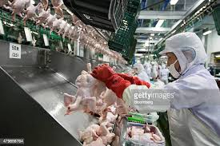
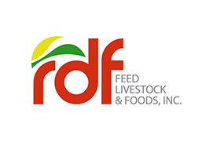

My Work Experience:

Food Manufacturing
South Korea
January 2018 - May 2021
Duties & Responsibilities:
- Cleaning and maintaining work areas
- Sorting and packing products
- Quality control
- Operating machinery
- Following health and safety procedures
Kitchen Staff
SUBIC BAY VENEZIA HOTEL
August - November 2018
Duties & Responsibilities:
- Assist in Basic food preparation
- Clean kitchen equipment
- Clean food preparation and storage area
- performs the job well with enough speed yet
- Recieve and store goods

Food Manufacturing
RDF FEED, LIVESTOCK & FOODS, INC.
March - October 2016
Duties & Responsibilities:
- Restocking shelves
- Accepting incoming orders
- Processing and packing orders
- Counting inventory and ensuring orders are shipped in a timely manner
Assistant Coordinator (Dispatcher)
SAN MIGUEL FOODS INC., B-MEG BATAAN PLANT
September 2011 - November 2013
Duties & Responsibilities:
- Ensure that everything runs smoothly by coordinating with customers
- Providing precise logistics for drivers to follow along on their routes and coordinating delivery times
- Prepares monthly report and inventories
- Customer service and inquiries

Encoder
SOURCE CORP. PHILIPPINES INC.
December 2010 - March 2011
Duties & Responsibilities:
- Encodes information from department forms into data system
- Ensure the information is accurately processed
- Verifies specified jobs to detect and correct possible encoding or other errors to ensure data is error free
- Ensure quality service

Production Operator
WISTRON INFOCOMM. CORPORATION
August 2007 - May 2010
Duties & Responsibilities:
- Operate production equipment
- Maintain the warehouse machines
- Store products and materials
- Report on defective products or machinery
- Check stock levels and report deficiencies in product or raw materials